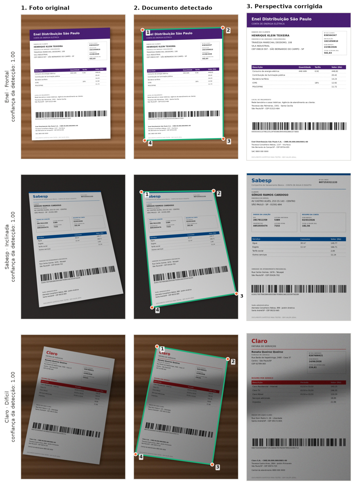
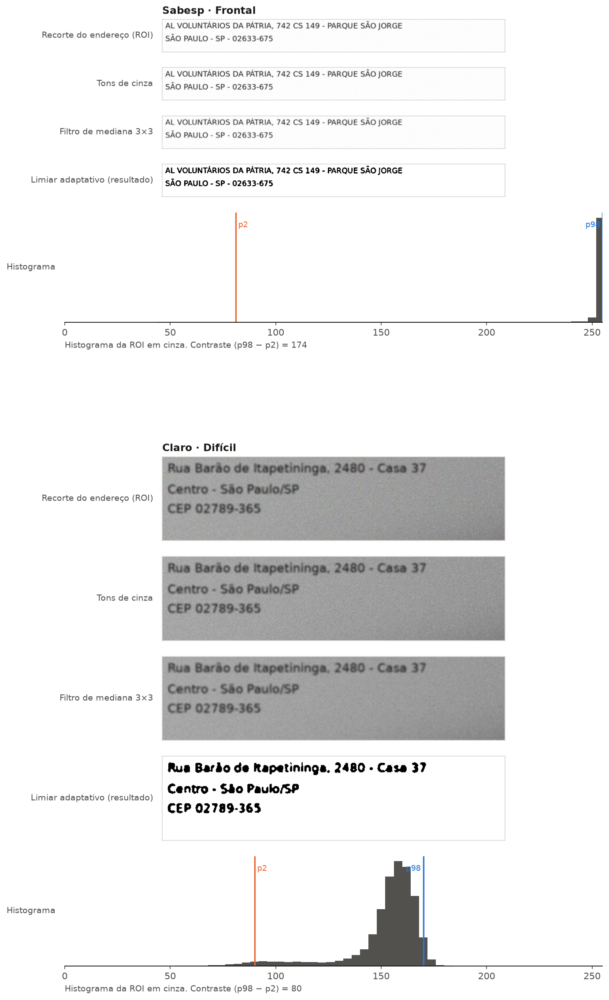
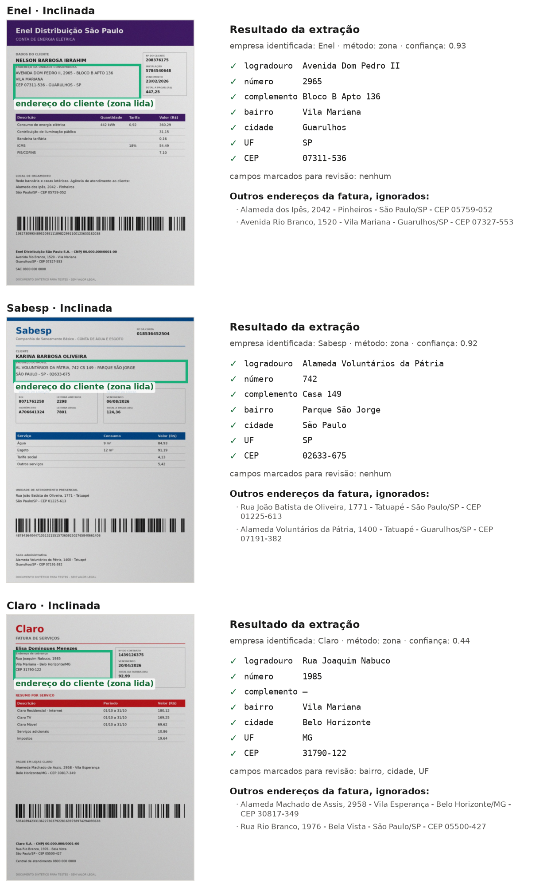
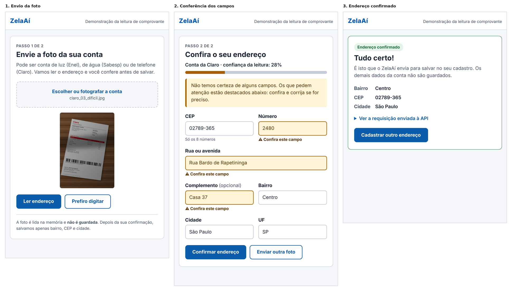
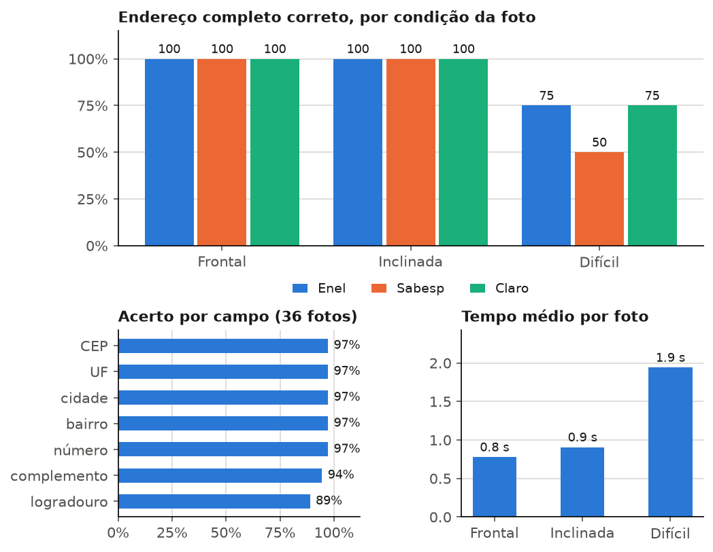

Extração automática de endereços a partir de fotografias de contas (Enel, Sabesp e Claro)
| Nome do produto | ZelaAí |
|---|---|
| Integrantes | RM553377 Enzo Rodrigues · RM552632 Gabriel Mediotti · RM553266 Hugo Santos · RM553384 Maria Júlia · RM553521 Rafael Cristofali |
| Cidadão e território | Idosos e pessoas com deficiência em bairros de São Paulo, os primeiros a sofrer com calçadas quebradas, semáforos sem funcionar e pontos de ônibus sem acessibilidade. |
| Problema, em uma frase | Falhas no espaço público que afetam quem mais depende dele não chegam à prefeitura de forma simples e não são acompanhadas até a solução. |
| Proposta de valor | "Reporte em 1 minuto, acompanhe até resolver": o cidadão registra o problema, a IA prioriza, o gestor aprova e um robô protocola no Portal 156. A Visão Computacional agiliza o cadastro: a foto de uma conta preenche o endereço, que o cidadão só confirma. |
| Arquitetura: componentes | API Node.js 22 (Azure App Service) · PostgreSQL 16 · Key Vault · Application Insights · Visão Computacional (serviço Python com OpenCV e Tesseract, objeto deste relatório) · GenAI (triagem) · Apache Airflow (dados) · robô UiPath (RPA) · Power BI · front-end web acessível. |
| Fontes de dados | Documentos sintéticos gerados pela equipe, com gabarito e sem dados pessoais reais · ocorrências registradas na plataforma · dados abertos SP156 e GeoSampa · IBGE. |
| Modelos de IA utilizados | OCR com Tesseract (idioma português) sobre imagens tratadas com OpenCV · LLM para triagem de ocorrências (GenAI), com plano B por regras e decisão final humana. |
| URL do MVP e repositório | API: zelai-api.azurewebsites.net · Swagger: /docs · Serviço de Visão: zelai-visao.azurewebsites.net · Repositório da Visão Computacional: guguim/gs-citizentech · Repositório da API: Rodriguessz/zelai-api |
| Indicadores de impacto | Da Visão: acerto do endereço completo, taxa de revisão e tempo de leitura (seção 8). Da plataforma: tempo médio entre o registro e o protocolo no 156, % de ocorrências resolvidas e prioridade por bairro. |
| ODS conectados | ODS 9 (infraestrutura resiliente) · ODS 10 (redução das desigualdades) · ODS 11 (cidades e comunidades sustentáveis). Detalhes na seção 10. |
No ZelaAí, o cidadão precisa informar o bairro e o CEP para que suas ocorrências sejam associadas ao território e priorizadas. Digitar esses dados é uma barreira justamente para quem o produto quer atender (idosos e pessoas com deficiência). O componente de Visão Computacional lê a foto de uma conta de luz, água ou telefone, localiza o endereço do cliente (e não o da empresa, da agência ou da loja) e devolve os dados separados em campos. O cidadão confere, corrige se for preciso e confirma.
O pipeline segue a ordem pedida no enunciado:
getPerspectiveTransform e warpPerspective para uma página A4Para testar sem dados pessoais reais, o repositório gera por código um dataset sintético com semente fixa (o resultado é sempre o mesmo):
A função rectify_document encontra a folha na foto e a devolve em visão frontal, em tamanho fixo de página A4 (1240 × 1754 px):
findContours.approxPolyDP) e ordena os 4 cantos: superior esquerdo, superior direito, inferior direito e inferior esquerdo.getPerspectiveTransform e warpPerspective.O limiar de Otsu entra só como reserva, quando o gradiente não encontra nenhum quadrilátero válido. Se nada for encontrado, a imagem original é devolvida com encontrado=False, e o produto pede outra foto ou a digitação manual. A confiança da detecção mede a força das bordas do quadrilátero e serve de filtro (não é uma probabilidade calibrada).
| Condição | Fotos | Documento encontrado | IoU médio | Erro médio nos cantos |
|---|---|---|---|---|
| frontal | 12 | 12 | 0,998 | 1,3 px |
| inclinada | 12 | 12 | 0,998 | 1,4 px |
| difícil | 12 | 12 | 0,997 | 2,6 px |
IoU compara o quadrilátero detectado com o do gabarito; o erro nos cantos é a distância média entre os cantos detectados e os reais. Tempo médio de 0,2 s por foto.

Depois da correção, o recorte do endereço passa por prepare_for_ocr e segue para o Tesseract (lang="por", --psm 6). Em vez de aplicar técnicas por intuição, cada variante foi comparada uma mudança por vez contra o texto impresso conhecido, nas 36 fotos já retificadas.
| Variante | CER frontal | CER inclinada | CER difícil | CER geral | CEP ok |
|---|---|---|---|---|---|
| referência: documento limpo, sem pré-processamento | 0,001 | 0,001 | 0,001 | 0,001 | 100% |
| original (sem pré-processamento) | 0,002 | 0,001 | 0,385 | 0,129 | 89% |
| cinza | 0,002 | 0,001 | 0,373 | 0,125 | 89% |
| ampliar 2× | 0,001 | 0,001 | 1,760 | 0,587 | 89% |
| mediana 3×3 | 0,002 | 0,002 | 0,207 | 0,070 | 89% |
| mediana 5×5 | 0,004 | 0,004 | 0,254 | 0,088 | 89% |
| equalizar histograma | 4,260 | 1,852 | 2,298 | 2,803 | 8% |
| esticar contraste | 0,002 | 0,001 | 0,391 | 0,131 | 89% |
| Otsu | 0,002 | 0,003 | 0,348 | 0,118 | 89% |
| mediana + Otsu | 0,006 | 0,005 | 0,267 | 0,093 | 86% |
| equalizar + mediana + Otsu | 2,773 | 1,533 | 1,704 | 2,003 | 3% |
| esticar + mediana + Otsu | 0,002 | 0,010 | 0,273 | 0,095 | 81% |
| mediana + adaptativo (escolhida) | 0,001 | 0,006 | 0,087 | 0,031 | 94% |
| ampliar + mediana + adaptativo | 0,002 | 0,000 | 0,135 | 0,046 | 89% |
| esticar + mediana + adaptativo | 0,002 | 0,008 | 0,928 | 0,313 | 83% |
| esticar (só com baixo contraste) + mediana + adaptativo | 0,001 | 0,006 | 0,928 | 0,312 | 83% |
| mediana + adaptativo + abertura | 0,013 | 0,013 | 0,220 | 0,082 | 81% |
| mediana + adaptativo + fechamento | 0,006 | 0,014 | 0,092 | 0,037 | 89% |

--psm, os modos 6 e 11 têm erro parecido, e os de linha única (7 e 13) falham porque o recorte tem três linhas.A função extract_address recebe a foto e devolve o endereço separado em campos (logradouro, número, complemento, bairro, cidade, UF e CEP), com confiança e a lista de campos que o cidadão deve conferir.
ENEL, SABESP, CLARO e termos como SANEAMENTO e FATURA DE SERVIÇOS), tolerando pequenos erros como "Sa besp".image_to_data) e o endereço é procurado logo abaixo de rótulos como ENDEREÇO DO IMÓVEL ou ENDEREÇO DE COBRANÇA. Rótulos como AGÊNCIA, LOJAS e SEDE encerram o bloco. Sem rótulo, só é aceito um bloco com CEP na parte superior da página (até 45% da altura).AV vira Avenida, CS 143 vira Casa 143), tolera separadores trocados pelo OCR e corrige a cidade com uma lista de cidades conhecidas.campos_revisar.
O endereço lido é sempre uma sugestão. O enunciado pede que os dados sejam apresentados para confirmação ou correção, e o fluxo foi desenhado assim:

A página usa rótulos associados a cada campo, alvos de toque grandes, foco visível, mensagens de erro anunciadas por leitores de tela e respeita o tema claro ou escuro do aparelho. São cuidados coerentes com o público do ZelaAí.
A API do ZelaAí (Node.js) chama o componente de Visão por HTTP quando o cidadão envia uma foto em POST /enderecos/extracao. O serviço de Visão é um serviço Python (FastAPI) que expõe exatamente o contrato definido pela API:
| Item | Contrato |
|---|---|
| Requisição | POST {VISAO_URL}/extrair-endereco, multipart/form-data, campo imagem (JPG, PNG ou WEBP, até 5 MB). Header x-api-key quando VISAO_API_KEY está configurada. |
| Resposta (200) | { "empresa": "Sabesp", "confianca": 0.93, "endereco": { "logradouro", "numero", "bairro", "cep", "cidade" } }, mais os extras complemento, uf, revisar, campos_revisar, problemas e metodo. Campos não lidos vêm como null. |
| Erros | 401 (chave), 413 (mais de 5 MB), 415 (tipo de arquivo), 422 (imagem ilegível ou nenhum endereço de cliente encontrado). |
| Saúde | GET /health, usado como health check do contêiner. |
A API do ZelaAí valida a resposta com um esquema (zod), marca revisar: true quando confianca < 0,8 (o mesmo limiar usado internamente na Visão) e formata o CEP. Qualquer falha da Visão (serviço fora do ar, tempo esgotado, chave errada ou resposta inválida) ativa o plano B: a API responde fonte: "manual", registra o evento PlanoBAtivado e orienta o cidadão a digitar o endereço. O cadastro nunca trava.
| Variável | Onde | Uso |
|---|---|---|
VISAO_URL | API do ZelaAí | endereço base do serviço de Visão; sem ele, a API usa o plano B |
VISAO_API_KEY | API e serviço de Visão | chave compartilhada, guardada no Key Vault |
VISAO_TIMEOUT_MS | API do ZelaAí | tempo limite (padrão 15000 ms). A leitura leva em média 1,2 s e, nas fotos difíceis, cerca de 2 s |
Verificação da integração. O serviço foi executado localmente e chamado com o próprio cliente da API do ZelaAí (visaoClient.js e enderecoService.js, do repositório da API). Fotos legíveis voltaram com fonte: "visao", empresa e endereço corretos e revisar: false; uma foto difícil voltou com revisar: true; e, com a chave errada, a API caiu no plano B manual, como previsto. Além disso, testes automatizados do serviço validam a resposta contra o mesmo formato que o esquema da API exige.
Publicação. O serviço é empacotado em um Dockerfile (Python 3.12, Tesseract e idioma português) e roda como um segundo Web App em contêiner, no mesmo grupo de recursos e no mesmo plano Linux da API, porque o App Service Node da API não inclui o Tesseract. A imagem é construída e publicada no GitHub Container Registry por um workflow do GitHub Actions a cada merge na main, depois de um teste de fumaça (o contêiner sobe, /health responde e a rota protegida recusa chamadas sem chave). Na API do ZelaAí, as configurações VISAO_URL e VISAO_API_KEY apontam para o serviço.
Verificação em produção. Em 18/11/2026, uma chamada ao serviço publicado em https://zelai-visao.azurewebsites.net sem a chave voltou 401; com a chave, a foto sintética sabesp_01_frontal voltou com empresa Sabesp, confiança 0,93, endereço completo (logradouro, número, bairro, CEP, cidade, complemento e UF) e revisar: false.
O repositório tem 235 testes automatizados (pytest), entre eles testes de unidade do parser, da validação e da votação; testes de integração do pipeline sobre as fotos sintéticas, com o gabarito; e testes do serviço HTTP (contrato, chave, tipo e tamanho do arquivo e ausência de gravação em disco). Os scripts evaluate_document_detection.py, experiment_preprocessing.py e evaluate_extraction.py calculam as métricas contra o gabarito.
Cada campo é comparado com o gabarito ignorando maiúsculas e espaços, mas não os acentos. "Endereço completo" é a porcentagem de fotos com os sete campos corretos; "distrator" é a porcentagem de fotos em que o CEP extraído é o de uma agência, loja ou sede.
| Método | Frontal | Inclinada | Difícil | Geral | Empresa | Distrator | Tempo por foto |
|---|---|---|---|---|---|---|---|
| Zona por empresa | 100% | 100% | 67% | 89% | 100% | 0% | 0,6 s |
| Âncora (página inteira) | 100% | 92% | 50% | 81% | 100% | 0% | 1,5 s |
| Automático (zona, depois âncora) | 100% | 100% | 67% | 89% | 100% | 0% | 1,2 s |
| Grupo | Fotos | Empresa identificada | Endereço completo | Marcadas para revisão | Tempo médio |
|---|---|---|---|---|---|
| Enel | 12 | 100% | 92% | 25% | 0,9 s |
| Sabesp | 12 | 100% | 83% | 33% | 1,1 s |
| Claro | 12 | 100% | 92% | 58% | 1,6 s |
| frontal | 12 | 100% | 100% | 17% | 0,8 s |
| inclinada | 12 | 100% | 100% | 17% | 0,9 s |
| difícil | 12 | 100% | 67% | 83% | 1,9 s |
| Todas | 36 | 100% | 89% | 39% | 1,2 s |
Os tempos foram medidos em um ambiente de nuvem sem GPU, em um só processo, e variam com o hardware.
Acerto por campo: logradouro 89%, número 97%, complemento 94%, bairro 97%, cidade 97%, UF 97% e CEP 97%.
Os quatro erros do modo automático são todos de fotos difíceis (escuras, com sombra, desfoque e ruído):
| Foto | O que aconteceu |
|---|---|
enel_02_dificil | Dom Pedro II lido como Dom Pedro Tt. O termo de duas letras é apontado como suspeito e o campo vai para revisão. |
sabesp_02_dificil | Foto ilegível (escura, borrada e com a página 17 px deslocada na retificação). O sistema não inventa um endereço: devolve confiança 0 e pede o preenchimento manual. Mostra que o recorte por coordenadas fixas é frágil. |
sabesp_03_dificil | José lido sem acento e complemento BL B AP 174 lido como BL BAP 174. O complemento é apontado como não reconhecido. |
claro_03_dificil | Itapetininga lido como Rapetininga e Barão como Bardo. As leituras das variantes divergem e o campo é marcado para revisão. |
Um erro corrigido durante o desenvolvimento: em claro_04_dificil, quando o rótulo do endereço do cliente não era lido, o plano B por âncora aceitava o primeiro CEP da página e o seguinte era o de uma loja (um endereço distrator). Hoje ele só aceita blocos na parte superior da página; sem rótulo e sem bloco, devolve "não encontrado" e pede preenchimento manual. Há um teste automatizado para esse caso.

sabesp_02_dificil). Margem adicional ou âncoras de texto reduziriam o problema.O ZelaAí conecta-se aos ODS 9, 10 e 11. A tabela abaixo explica como o produto e, em particular, o componente de Visão contribuem para metas específicas. As metas foram conferidas no texto oficial da ONU (sdgs.un.org/goals); as citações estão no original em inglês, seguidas de uma explicação em português.
Meta 11.7. "By 2030, provide universal access to safe, inclusive and accessible, green and public spaces, in particular for women and children, older persons and persons with disabilities."
Meta 11.2. "By 2030, provide access to safe, affordable, accessible and sustainable transport systems for all, improving road safety, notably by expanding public transport, with special attention to the needs of those in vulnerable situations, women, children, persons with disabilities and older persons."
Meta 11.3. "By 2030, enhance inclusive and sustainable urbanization and capacity for participatory, integrated and sustainable human settlement planning and management in all countries."
Como contribuímos. O ZelaAí leva ao poder público as falhas em calçadas, semáforos e pontos de ônibus que afetam idosos e pessoas com deficiência (metas 11.7 e 11.2), e as acompanha até a solução. Ao associar cada ocorrência ao bairro e priorizar por território, abre um canal de participação do cidadão no planejamento e na gestão da cidade (meta 11.3). A Visão Computacional entra na porta de entrada: ler o endereço da conta em vez de exigir digitação reduz a barreira para que quem mais precisa consiga se cadastrar e reportar.
Meta 10.2. "By 2030, empower and promote the social, economic and political inclusion of all, irrespective of age, sex, disability, race, ethnicity, origin, religion or economic or other status."
Como contribuímos. O público do ZelaAí é composto por idosos e pessoas com deficiência, grupos citados na meta. O componente de Visão evita que digitar um endereço seja um obstáculo para o uso do serviço, e o plano B manual garante que quem não consegue fotografar a conta ou teve uma leitura ruim também seja atendido. A página de confirmação foi desenhada com acessibilidade (rótulos, foco visível, leitores de tela, alvos de toque grandes).
Meta 9.1. "Develop quality, reliable, sustainable and resilient infrastructure, including regional and transborder infrastructure, [...]" (a meta segue com o apoio ao desenvolvimento econômico e ao bem-estar humano, com foco no acesso acessível e equitativo para todos).
Meta 9.c. "Significantly increase access to information and communications technology [...]" (a meta segue com o acesso universal e a preço acessível à internet nos países menos desenvolvidos).
Como contribuímos. O ZelaAí usa tecnologia da informação para tornar a manutenção da infraestrutura urbana mais visível e acompanhável (meta 9.1). O componente de Visão foi construído com ferramentas abertas e interoperáveis (OpenCV, Tesseract e uma API HTTP com contrato claro), o que facilita que outra prefeitura ou equipe o reutilize. Reconhecemos que a meta 9.c trata de acesso à tecnologia em sentido amplo, e nossa contribuição a ela é indireta: um serviço digital que funciona também para quem tem pouca familiaridade com formulários.
| Indicador | Situação |
|---|---|
| Acerto do endereço completo e taxa de revisão (seção 8) | Medidos nas 36 fotos sintéticas: 89% de acerto e 39% de revisão. |
| Nenhum erro sem aviso ao cidadão | Medido: os 4 erros foram todos marcados para revisão. |
| Tempo de cadastro antes e depois da leitura automática | A medir no MVP com usuários reais. |
| % de campos aceitos sem edição e taxa de correção manual | A medir no MVP com usuários reais (a tela de confirmação permite registrar). |
| % de cadastros concluídos | A medir no MVP com usuários reais. |
O componente segue princípios das fontes do briefing sobre cidades inteligentes e transformação digital inclusiva (UN-Habitat e PNUD): transparência e supervisão humana (mostra a confiança e deixa a decisão final com o cidadão), privacidade desde a concepção (processamento em memória, dados mínimos, nada de foto guardada), alternativas quando o digital falha (digitação manual) e software aberto e interoperável (OpenCV, Tesseract e API com contrato claro).
/health; a rota de extração exige chave de API)